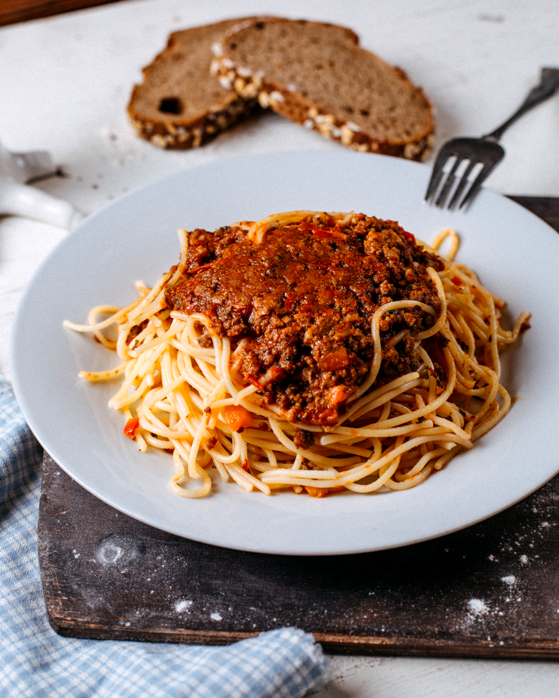

Bolognese

Description
It's a fresh, good tasting pasta dish, that I've been making many times through uni college and in my apartman as
well.
While not Italian traditional, on it's absolute basics, it's cooked minced meat paired with tomato sauce,
basil and garlic.
Ingredients
- 500g of minced meat
- Garlic
- 300ml of tomato puree
- Basil
- Salt
- Pepper
- 500g spaghetti
- Any type of cheese
- Olive oil
- Vegetable oil
Steps
- Put a touch of either olive oil or vegetable oil, and wait for your pan to heat up
- Once hot, add in the minced meat, and start cooking it, waiting for it to slightly turn grey
- Put in your garlic, using a garlic crusher, or chopping it finely beforehand, and then season with salt,
pepper, and basil. Don't worry about underseasoning, you can adjust them anytime
- Let it cook a bit more, if you want to, you can grab a paper towel to remove excess rendered fat
- Put in your tomato puree, give it a whirl with your wooden spoon, and close the lid of the pan, letting it
cook for about 10-20 minutes
- Taste the dish, and adjust seasoning
- While it's cooking, take out a pot for your spaghetti, fill it up with water, and put in generous amounts of
salt, and a bit of vegetable oil, and bring it to a simmer
- Add in your spaghetti without breaking it, and cook it to just over al-dente
- Strain your spaghetti
- Your bolognese sauce should be done cooking, taste it one last time for a final seasoning adjustment, and
then you can plate up your spaghetti, and put your sauce on top
- Add some grated cheese
- Enjoy!
Home